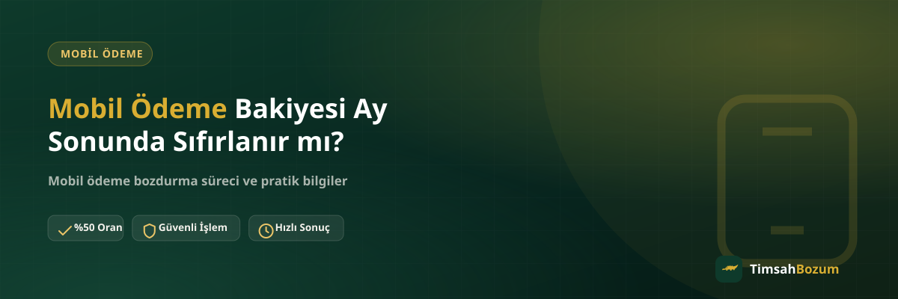

Ay sonu yaklaştığında pek çok kullanıcının aklına aynı soru takılıyor: kullanılmayan mobil ödeme bakiyesi otomatik olarak silinir mi, yoksa bir sonraki aya mı devreder? Bu belirsizlik, bakiyeyi nakde çevirmeyi düşünenler için özellikle önemli çünkü "belki kaybolur" endişesiyle acele karar vermek doğru değil. Bu yazıda konuyu hem operatör tarafı hem bozum süreci açısından ele alıyoruz.
Mobil Ödeme Bakiyesi Ay Sonunda Ne Olur?
Mobil ödeme bakiyesi, hattına tanımlanan bir harcama limitinin o ana kadar kullanılmamış kısmıdır. Bu bakiyenin ay sonunda ne olacağı, yani sıfırlanıp sıfırlanmayacağı ya da devredip devretmeyeceği, operatörün kendi belirlediği bir politikadır ve zaman içinde değişebilir. TimsahBozum olarak bu politikaları biz belirlemiyoruz; bu yüzden güncel ve kesin bilgiyi her zaman operatörünün resmi uygulaması veya müşteri hizmetleri üzerinden teyit etmeni öneririz.
Bakiye Sıfırlanır mı, Yoksa Devreder mi?
Bu sorunun tek bir kesin cevabı yok çünkü uygulama operatörden operatöre, hatta zaman içinde aynı operatör için bile değişebiliyor. Bazı dönemlerde kullanılmayan bakiye bir sonraki döneme taşınırken, bazı dönemlerde belirli bir tarihte sıfırlanabiliyor. Emin olmadığın bir durumda tahmin yürütmek yerine, hattının operatör uygulamasından güncel bakiye durumunu ve varsa geçerlilik süresini kontrol etmen en sağlıklısı.
Sıfırlanmadan Önce Bakiyeni Nasıl Değerlendirebilirsin?
Elinde kullanmayı düşünmediğin bir mobil ödeme bakiyesi varsa, bunu beklemek yerine değerlendirmek isteyebilirsin. Bakiyeni mobil ödeme bozdurma hizmetiyle nakde çevirmek, bakiyenin operatör tarafında ne olacağını beklemek zorunda kalmadan elindeki değeri kullanmanı sağlar. Süreç WhatsApp üzerinden başlar: güncel bakiyeni gösteren bir ekran görüntüsü paylaşırsın, oranı teyit edersin, onay sonrası ödemen WhatsApp üzerinden görüşülen yöntemle yapılır.
Mobil Ödeme Bakiyesi Bozdurma Güvenilir mi?
Bozum işlemi için üyelik, form doldurma veya kimlik belgesi istenmez, hesabına erişim de talep edilmez. Tek paylaştığın bilgi, bakiyeni gösteren güncel bir ekran görüntüsüdür. İşlemin resmi olduğundan emin olmak için yalnızca doğrulanmış WhatsApp hattından (+90 543 887 21 71) ilerlemek, farklı bir numaradan gelen tekliflere bilgi paylaşmadan önce teyit istemek önemli. Sürece dair hattına gelen bir SMS doğrulama kodu asla senden istenmez; böyle bir talep gelirse bu dolandırıcılık şüphesidir ve işlemi durdurmalısın.
Bakiyenin Bir Kısmını Bozdurmak Mümkün mü?
Evet. Mobil ödeme, Pokus ve Paycell gibi bakiye tabanlı hizmetlerde kısmi bozum mümkündür; bakiyenin tamamını değil, istediğin bir kısmını da nakde çevirebilirsin. Bu, örneğin bir kısmını ihtiyaç için kullanmayı planlarken kalan kısmını değerlendirmek isteyenler için pratik bir seçenek. (Razer Gold ve iTunes gibi kod tabanlı hizmetlerde ise durum farklıdır; kod tek kullanımlıktır ve kısmi bozum söz konusu değildir, kodun tam değeri tek seferde işleme alınır.)
Bozumdan Sonra Görünen Bakiye Değişir mi?
Bozdurduğun tutar kadar bakiyen kullanılmış sayılır, dolayısıyla operatör uygulamandaki güncel bakiye bu işlemden sonra düşer. Bu normal bir durumdur; bozum, bakiyeni harcamak yerine nakde çevirmenin bir yolu olduğu için operatör tarafında da normal bir harcama gibi görünür. İşlem tamamlandıktan sonra uygulamandaki bakiyenin güncellenip güncellenmediğini kontrol etmek, sürecin sorunsuz tamamlandığını görmenin basit bir yolu.
Bozum Oranı Neden Sabit Değil?
Sitede yayınlanan oranlar (mobil ödeme için %50 gibi) genel bir referans niteliğindedir ve piyasa koşullarına göre güncellenebilir. İşlem öncesi güncel oranı WhatsApp'tan teyit etmek, hem senin hem karşındaki hattın aynı bilgiye dayanarak ilerlemesini sağlar. Oranı teyit etmek bir taahhüt oluşturmaz; güncel oranı öğrendikten sonra işlemden vazgeçmekte serbestsin.
Ay Sonunu Beklemenin Riski Nedir?
Operatörün bakiyeyi devredip devretmediğini net bilmiyorsan, "belki devreder" varsayımıyla son güne kadar beklemek riskli bir tercih olabilir. Ay sonuna doğru yoğunluk artabilir, o gün başka işlerin çıkabilir ya da bakiyeni gösteren ekran görüntüsünü almayı unutabilirsin. Bunun yerine, bakiyenin kullanılmadığını fark ettiğin an durumu değerlendirmek, son ana kalan bir telaşı önler. Karar vermeden önce oranı öğrenmenin bir yükümlülük getirmediğini unutma; sadece bilgi almak için de yazabilirsin.
Aynı Ay İçinde Birden Fazla Kez Bozum Yapılabilir mi?
Bakiyen ay içinde farklı zamanlarda artıyorsa, her seferinde ay sonunu beklemek zorunda değilsin. Bakiyende bozdurmak istediğin bir tutar oluştuğunda WhatsApp'tan yazıp süreci başlatabilirsin; aynı ay içinde birden fazla işlem yapman önünde bir engel yok. Bu, özellikle bakiyesi düzenli olarak artan ve elinde tutmak yerine değerlendirmeyi tercih eden kullanıcılar için pratik bir esneklik sağlıyor.
İşlem Hangi Saatlerde Başlatılabilir?
TimsahBozum her gün 10:00 ile 03:00 arasında aktif. Bu saatlerin dışında gönderdiğin bir mesaj kaybolmaz, hat açıldığında sırasıyla yanıtlanır. Ay sonu gibi belirli bir tarihe yetiştirmek istediğin bir işlem varsa, bunu son ana bırakmak yerine önceden bilgini hazırlayıp mesajını atman, sürecin zamanında ilerlemesi açısından daha güvenli bir yaklaşım.
İlgili Yazılar
- Mobil Ödeme Bakiyesi Kısmi Bozdurulabilir mi?
- Mobil Ödeme Limiti Nasıl Belirlenir?
- Mobil Ödeme Bakiyesi Nedir, Nasıl Oluşur?
Özetle, mobil ödeme bakiyenin ay sonunda sıfırlanıp sıfırlanmayacağı operatör politikasına bağlıdır ve bunu en güvenilir şekilde operatörünün kendi kanallarından öğrenebilirsin. Elindeki bakiyeyi beklemeden değerlendirmek istersen, güncel bakiye ekran görüntünle WhatsApp hattımıza yazarak oranı teyit edebilir ve işlemini başlatabilirsin.